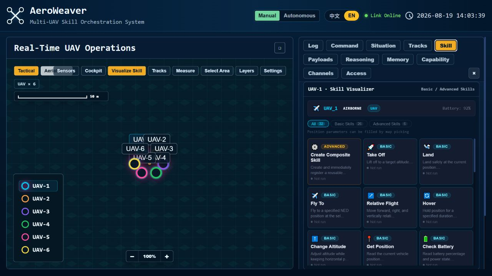

01
PROBLEM
Governed Skill Package
A bare callable action does not expose when it is applicable or whether its output can be trusted.
CORE MECHANISM
Semanticsdescription + metadata
+
Typed Contractinputs + preconditions
+
Validatorbounded output
→
Governed Skillwhitelisted executor
PROJECT EVIDENCE
Registered, inspectable capability

What changes: the unit of reuse becomes a governed package, not an opaque function or generated program.